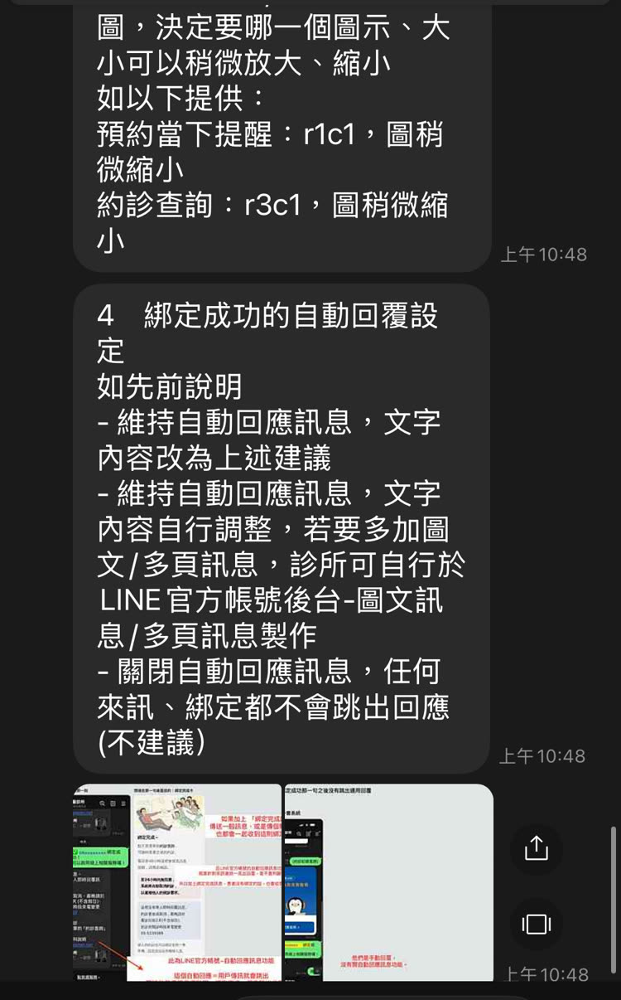
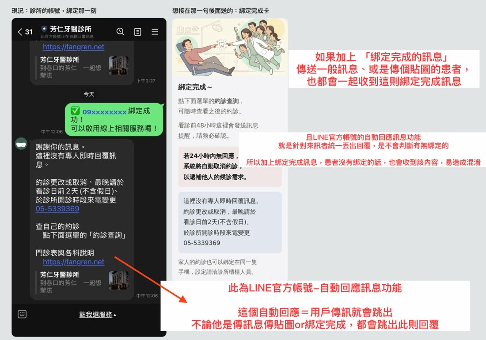
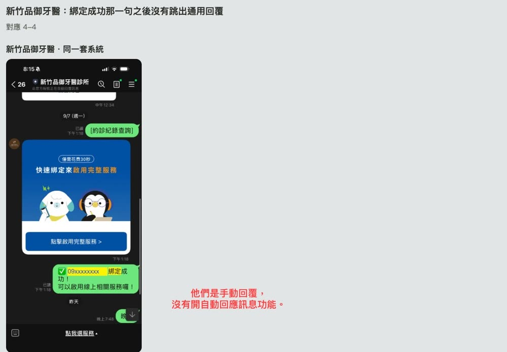

LINE 官方帳號 待調整項目與規格
芳仁牙醫診所 更新於 2026-09-18
上一版（9/14）列了四件未定案。1 與 2 已經處理完，搬到最下面的已完成項目；3 換了做法（九顆浮水印改成一條帶狀 logo）；4 收到翔評 9/18 的回覆，記在 4-4-1。
卡片的模擬圖一律畫成病人手機上的寬度（單張約 268px、輪播 micro 約 162px）。
已完成項目（含 1 與 2）
3 約診通知與紀錄查詢版面九顆浮水印改成一條帶狀 logo
上一版是九顆浮水印、每一筆約診換一顆。這一版整組換掉：九顆排成一條帶子、做成一張圖，兩則各一張，不隨約診換。下面的卡片一律畫成病人手機上的寬度：單張約 268px、輪播 micro 約 162px。
3-1 改用帶狀 logo為什麼換、換掉之後要填什麼
換做法的起點是翔評 9/18 的回覆。
「約診查詢如有多筆，也都是套用同一圖示」、「不能修改順序」。
「圖，決定要哪一個圖示、大小可以稍微放大、縮小 如以下提供： 預約當下提醒：r1c1，圖稍微縮小 約診查詢：r3c1，圖稍微縮小」
所以不必在九顆裡挑一顆 —— 九顆排成一條帶子、做成一張圖，兩則各一張，一筆約診算哪一顆的規則整條不必做了。大小也不必另外估：帶子是滿版的（size: "full"），高度由圖自己的長寬比決定。
〔病人姓名〕 約好囉
2026/09/11 星期五 11:50
異動請在2天前(不含假日)與診所聯繫
看診前2天會再提醒一次，記得回覆喔～
〔病人姓名〕 約好囉
2026/09/11 星期五 11:50
異動請在2天前(不含假日)與診所聯繫
看診前2天會再提醒一次，記得回覆喔～
要填的值
九顆各一組（兩欄寬度、長寬比、網址）→ 一張圖、size: "full"，一個數字都不必填
position: "absolute"
浮水印非疊不可（那一項到今天還沒有實機驗過）→ 內容拆成兩塊 box、帶子夾在中間，不必疊
圖檔
18 張（九顆 × 兩種濃度）→ 2 張（兩則的顆數不一樣，各一張）
挑哪一顆的規則
(月＋日) % 9 → 不必做了
換來的
顏色不再跟著那一筆約診換 —— 帶子固定一條，兩則、每一筆都一樣
實機畫面（示意）
3-2 預約成功通知・定稿單張 mega・268px
單張那一則。帶子 18 顆，其中七顆套診所七個科別的顏色、其餘淡墨。
- 卡片 bubble
size: "mega"、backgroundColor#FFFFFF（翔評現在跑的就是純白，不必換）。 body的paddingAll改成0px，內距移到上下兩塊 box 上（各paddingAll14px）—— 帶子才滿得到卡片的左右邊。- 上面那一塊：〔病人姓名〕＋「 約好囉」
md／日期lg粗體margin6px。 - 帶子：
image、url見 3-6、size: "full"、aspectMode: "fit"。夾在日期與底下那兩行之間，不是absolute、不必疊。 - 下面那一塊：兩行灰字
xs#5C5F57（第一行不要margin，隔開它們的已經是帶子了）。 - 每一格都
wrap: true。這一則不放約診狀態那一列。
〔病人姓名〕 約好囉
2026/09/11 星期五 11:50
異動請在2天前(不含假日)與診所聯繫
看診前2天會再提醒一次，記得回覆喔～
9 顆那一份 × 2
套色 7 顆・間隔 2、3、2、5、3、2
3-3 約診紀錄查詢・定稿輪播 micro・162px
輪播那一則。帶子 13 顆（卡片窄，顆數跟著少一點），同樣七顆套色。
- 卡片 bubble
size: "micro"（翔評現在跑的是deca，這一項要換）。同一條輪播裡每一張都要是同一個 size，整組一起換。 body的paddingAll同樣改成0px，上下兩塊各paddingAll14px，backgroundColor#FFFFFF。- 上面那一塊：〔病人姓名〕
md#5C5F57／日期lg粗體margin6px。 - 日期 micro 放不下一行，請在這一則的日期值裡帶一個換行：
2026/09/11換行星期五 11:50（見 3-5）。 - 帶子：同 3-2，
size: "full"，夾在日期與約診狀態之間。檔案和單張那一則不是同一張（顆數不一樣）。 - 下面那一塊：約診狀態那一列（見 3-4）。
〔病人姓名〕
2026/09/11 星期五 11:50
約診狀態已排定
#4478b5〔病人姓名〕
2026/09/11 星期五 11:50
約診狀態已確認
#3f654a〔病人姓名〕
2026/09/11 星期五 11:50
約診狀態未回覆
#c28229〔病人姓名〕
2026/09/11 星期五 11:50
約診狀態已取消
#ae4f4d13 顆・圖檔 1024×87px・畫在卡上 13.8px 高（最高那一顆 6.9px）。13 顆自己一份順序・九顆各一次 ＋ 最窄的 4 顆各多一次（r3c1／r3c2／r1c1／r2c2）；套色 7 顆・間隔 2、2、2、2、2、2（7 顆散進 13 格只排得出這一種）。
3-4 約診狀態四個值的畫法、色碼與對齊
約診紀錄查詢那一張卡上的「約診狀態」一列。
| 值 | 什麼時候 | 藥丸底色 |
|---|---|---|
| 已排定 | 提醒還沒發送之前 | #4478b5 |
| 已確認 | 提醒發送後，病人按了確認 | #3f654a |
| 未回覆 | 提醒發送後，病人還沒有回應 | #c28229 |
| 已取消 | 提醒發送後，病人按了取消 | #ae4f4d |
- 標籤 「約診狀態」（現在印的是「預約狀態」）。改的只是卡片上印出來的字，資料庫欄位不必改名。標籤
xs#5C5F57，不加粗、不套色。 - 值 做成藥丸：底色照下表、白字 #FFFFFF、粗體、
xs，圓角 8.5px，內距約上 5px／左右 8px／下 5px。 - 寫法 那一列是
layout: "horizontal"的 box：標籤 text、藥丸 box（flex: 0）、最後補一個filler，藥丸才會只包住那幾個字。標籤與藥丸基線對齊。 - 原本那一句「您已取消，請聯絡診所改約」收成「已取消」。
- 藥丸裡的字在盒子裡怎麼坐是 LINE 決定的，請送一則測試訊息確認上下留白一致。
若病人自己按過取消的那一筆可以不列在他的查詢清單裡（樂衍後台照舊保留），那一列「已取消」就不會出現。
3-5 日期的順序
| 翔評現在 | 2026/09/11 11:50 星期五 |
| 請改成 | 2026/09/11 星期五 11:50 |
- 四樣東西（年月日／星期幾／時間）照翔評 09-10 那一版，一個字都不換，只調順序：星期幾接在日期後面、時間放最後。
- 單張（mega） 一行：
2026/09/11 星期五 11:50。 - 輪播（micro） 卡片窄、放不下一行，值裡帶一個換行：
2026/09/11＋\n＋星期五 11:50，星期幾不會被折斷。 - 兩則的日期那一格都要
wrap: true、不要maxLines（設了會被截成「…星...」）。
3-6 帶子的圖檔與 Flex JSON兩張圖已經上線，直接引用網址
兩張帶子的圖檔已經放上去了，直接引用這兩個網址就好（透明底 PNG，1024px 寬，在 LINE 的 1024×1024 之內）。
| 用在哪一則 | 顆數 | 圖檔 | 網址 | 畫在卡上 |
|---|---|---|---|---|
| 預約成功通知（單張） | 18 顆 | 1024×60px・PNG・透明底 | https://fangren.net/assets/line/band-18-set.png |
15.6px 高（卡片 268px） |
| 約診紀錄查詢（輪播） | 13 顆 | 1024×87px・PNG・透明底 | https://fangren.net/assets/line/band-13-set.png |
13.8px 高（卡片 162px） |
- 帶子是滿版的：
size: "full"＋aspectMode: "fit"，寬度跟著卡片、高度由圖自己的長寬比決定，不要自己填 px。 - 兩則的圖不可以互換：單張那一張 18 顆、輪播那一張 13 顆，換過來會讓標誌變形或大小不一致。
- 圖是透明底的，卡片底色照舊填 #FFFFFF。
- 底下兩份 JSON 就是照這個規格寫好的，裡面用大括號框起來的 patient（病人姓名）、date／date_two_lines（日期）、status 與 status_color（約診狀態與它的底色）是要翔評填的值。
展開 預約成功通知（單張 mega）的 Flex JSON
{
"type": "bubble",
"size": "mega",
"body": {
"type": "box",
"layout": "vertical",
"paddingAll": "0px",
"backgroundColor": "#FFFFFF",
"contents": [
{
"type": "box",
"layout": "vertical",
"paddingAll": "14px",
"contents": [
{
"type": "text",
"size": "md",
"color": "#2A2C27",
"wrap": true,
"contents": [
{
"type": "span",
"text": "{{patient}}",
"weight": "bold"
},
{
"type": "span",
"text": " 約好囉"
}
]
},
{
"type": "text",
"text": "{{date}}",
"size": "lg",
"weight": "bold",
"color": "#2A2C27",
"margin": "6px",
"wrap": true
}
]
},
{
"type": "image",
"url": "https://fangren.net/assets/line/band-18-set.png",
"size": "full",
"aspectMode": "fit",
"aspectRatio": "1024:60"
},
{
"type": "box",
"layout": "vertical",
"paddingAll": "14px",
"contents": [
{
"type": "text",
"text": "異動請在2天前(不含假日)與診所聯繫",
"size": "xs",
"color": "#5C5F57",
"wrap": true
},
{
"type": "text",
"text": "看診前2天會再提醒一次，記得回覆喔～",
"size": "xs",
"color": "#5C5F57",
"margin": "5px",
"wrap": true
}
]
}
]
}
}展開 約診紀錄查詢（輪播 micro）的 Flex JSON
{
"type": "carousel",
"contents": [
{
"type": "bubble",
"size": "micro",
"body": {
"type": "box",
"layout": "vertical",
"paddingAll": "0px",
"backgroundColor": "#FFFFFF",
"contents": [
{
"type": "box",
"layout": "vertical",
"paddingAll": "14px",
"contents": [
{
"type": "text",
"text": "{{patient}}",
"size": "md",
"color": "#5C5F57",
"wrap": true
},
{
"type": "text",
"text": "{{date_two_lines}}",
"size": "lg",
"weight": "bold",
"color": "#2A2C27",
"margin": "6px",
"wrap": true
}
]
},
{
"type": "image",
"url": "https://fangren.net/assets/line/band-13-set.png",
"size": "full",
"aspectMode": "fit",
"aspectRatio": "1024:87"
},
{
"type": "box",
"layout": "vertical",
"paddingAll": "14px",
"contents": [
{
"type": "box",
"layout": "horizontal",
"alignItems": "baseline",
"contents": [
{
"type": "text",
"text": "約診狀態",
"size": "xs",
"color": "#5C5F57",
"flex": 0
},
{
"type": "box",
"layout": "vertical",
"flex": 0,
"backgroundColor": "{{status_color}}",
"cornerRadius": "8.5px",
"paddingTop": "5px",
"paddingBottom": "5px",
"paddingStart": "8px",
"paddingEnd": "8px",
"margin": "9px",
"contents": [
{
"type": "text",
"text": "{{status}}",
"size": "xs",
"weight": "bold",
"color": "#FFFFFF"
}
]
},
{
"type": "filler"
}
]
}
]
}
]
}
}
]
}4 綁定成功的自動回覆設定現況、其他帳號的做法、綁定完成卡的規格、翔評 9/18 的回覆
- 用戶端送出的那一句「綁定成功」無法（或不建議）移除 —— 那是以病人的身分送進聊天室的，而且診所櫃檯會用那個號碼查病歷。
- 綁定成功之後跳出來的自動回覆，現況：LINE 商家帳號的自動回應只能設定一種，所以綁定那一刻跳出來的，和平常打字進去收到的是同一則。
- 其他商家帳號在綁定那一刻送的是另一則，和平常打字進去收到的不一樣 —— 潔客幫、中國信託、國泰世華、玉山四個帳號都是這樣。
- 同一套系統的新竹品御牙醫，綁定成功那一句之後沒有跳出通用回覆。 想請教他們的自動回應是怎麼設的，診所能不能照那個設法。
現況：診所的帳號，綁定那一刻

想接在那一句後面送的：綁定完成卡

4-5 翔評回覆9/18 收到（上一版寫的 4-4-1 就是這一節）
以下是 9/18 收到的回覆，逐字照抄。
關於 4-4（新竹品御牙醫）：「他們是手動回覆，沒有開自動回應訊息功能。」
關於整件事，回覆給了三個做法：
－維持自動回應訊息，文字內容改為上述建議
－維持自動回應訊息，文字內容自行調整，若要多加圖文/多頁訊息，診所可自行於 LINE 官方帳號後台-圖文訊息/多頁訊息製作
－關閉自動回應訊息，任何來訊、綁定都不會跳出回應(不建議）
回覆另外在診所送過去的兩張圖上標了三段說明：
「此為LINE官方帳號–自動回應訊息功能 這個自動回應＝用戶傳訊就會跳出 不論他是傳訊息傳貼圖or綁定完成，都會跳出此則回覆」
「如果加上 「綁定完成的訊息」傳送一般訊息、或是傳個貼圖的患者，也都會一起收到這則綁定完成訊息」
「且LINE官方帳號的自動回應訊息功能 就是針對來訊者統一丟出回覆，是不會判斷有無綁定的 所以加上綁定完成訊息，患者沒有綁定的話，也會收到該內容，易造成混淆」



診所這邊讀到的是：
- 4-4 有答案了：品御是把後台的自動回應關掉、改用人工回覆。所以照他們那個設法，代價是病人平常打字進來不會有任何回應 —— 那正是上面第三個做法（不建議）的同一件事。
- 三個做法都是在設定「後台的自動回應」，而診所問的 4-1、4-2 是另一件事：那句綁定成功是翔評的系統送出的，系統在那一刻就知道綁定完成了。由翔評的系統在綁定當下直接送綁定完成卡，不經過後台的自動回應 —— 那一項還沒有回覆。
- 紅字擔心的「沒綁定的人也會收到」，指的是把綁定完成卡放進後台的自動回應。若改由翔評的系統送，只有真的綁定完成的人會收到，那個顧慮就不成立 —— 診所想確認的正是這一條做不做得到。
4-6 正確的做法：不要用一般自動回覆，改由系統只對那一位病人送以下為AI 提取的LINE官方文件
翔評說的情況，在「使用 LINE 官方帳號後台的一般自動回覆」這個前提下是正確的。因為那個功能只是：收到任何用戶訊息 → 一律送出同一組自動回覆，它不知道患者是否真的完成綁定。因此把「綁定成功圖卡」放進去後，患者傳「你好」、貼圖或其他問題，都可能收到綁定成功圖卡。
但正確的處理方法不是用一般自動回覆，而是：患者完成綁定 → 翔評系統確認綁定成功 → 只對該患者發送綁定成功 Flex 圖卡。一般文字或貼圖則走原本的普通回覆，不會觸發綁定圖卡。
甲 用 LINE 的帳號連結機制
綁定成功會產生 accountLink 成功事件，系統可以針對該事件單獨回覆。
乙 用翔評自己的綁定頁面
後端在資料庫寫入「綁定成功」後，直接用 LINE User ID 主動推送該張 Flex 圖卡。
以下兩條的依據，AI 從 LINE 官方文件提取如下：
accountLink事件存在，而且回得了
帳號連結成功時 LINE 平台會送出accountLink事件，link.result為ok（失敗是failed），事件裡帶source.userId。成功那一次帶replyToken（失敗那一次不帶），所以可以只針對這一個事件回一則訊息。
出處：帳號連結事件https://developers.line.biz/en/docs/messaging-api/linking-accounts/- Flex 圖卡可以只送給指定的一個人
Messaging API 的 push（POST /v2/bot/message/push）指定to＝ 那位使用者的 LINE User ID，訊息型別可以是 Flex Message。
出處：發送訊息https://developers.line.biz/en/docs/messaging-api/sending-messages/ - 甲比乙省錢 —— 這一條原本沒提到，但會影響診所的費用
計入方案則數的是 push／multicast／broadcast／narrowcast；後台的聊天、自動回應訊息、加入好友的歡迎訊息不計入，而用replyToken回的訊息也不在計入的那一份清單裡。所以走甲（回accountLink事件）不佔則數，走乙（push）每一則都佔。
出處：訊息方案與則數https://developers.line.biz/en/docs/messaging-api/pricing/ - 不必為了這件事關掉後台的自動回應
LINE 官方帳號 2022-12-01 起，自動回應訊息與 Webhook 可以同時開啟。⚠ 但同一組關鍵字兩邊都設的話，好友會收到兩則回應 —— 關鍵字只設一邊。
出處：回應設定https://tw.linebiz.com/manual/line-official-account/oa-manager/
還有兩件請翔評確認（文件上查不到，實測一次就知道）：
- 後台的「自動回應訊息」是針對用戶傳來的訊息回的，而
accountLink不是用戶傳的訊息 —— 照理不會觸發它。官方文件沒有明講這一句，請實測一次。 - 現在那一句「✅ 09xxxxxxxx 綁定成功！」在畫面上是靠右的綠色泡泡，也就是以病人的身分送進聊天室的一則真訊息（見上面 4-2 那張現況圖）—— 自動回應會被觸發，成因就在這裡。若走甲那條路，綁定完成不必再讓病人送出一則訊息，這個觸發從源頭就不存在了；請確認現在的綁定流程有沒有辦法不送那一句。
這一節是 AI 從 LINE 官方文件提取的，若和翔評系統的實作有出入，以翔評實測為準。
其他商家帳號：綁定那一刻送的是另一則對應 4-3。手機號碼與姓名已遮
潔客幫・綁定那一刻

潔客幫・平常打字

中國信託・綁定完成

國泰世華・綁定完成

玉山銀行・綁定完成

台北富邦銀行・綁定完成

BREAD, ESPRESSO &・綁定完成

新竹品御牙醫：綁定成功那一句之後沒有跳出通用回覆對應 4-4
新竹品御牙醫・同一套系統

5 已完成項目9/18 這一輪 2 件 ＋ 先前 6 則
以下是已經完成、不必再調整的項目。上面兩件是 9/18 這一輪完成的；底下六則先前就已經在跑，文字、圖檔網址與 Flex JSON 在 /preview/line-spec/。
1 尚未綁定按約診查詢9/18 已完成・在那十二則裡是 ⑤
公版那張藍色圖卡已經換成診所的版本（一張頭圖、一行標題、一顆按鈕）。
換之前（公版）

換之後

2 看診前 48 小時提醒9/18 已完成・在那十二則裡是 ⑧
頭圖的 bug（被媽媽抱著的幼兒多一隻手）已經抽換成新圖，檔名與網址都沒有變。
換上新頭圖的提醒卡

先前已完成的 6 則

加好友那一刻／診所後台送

病人打任何字／診所後台送

他按預約改期／廠商送

看診後／廠商送

縣府宣布之後／診所後台送

他點選單／廠商送
這一頁是靜態的，內容有更新會直接改在同一個網址上。
七則訊息的文字、圖檔網址與 Flex JSON：/preview/line-spec/